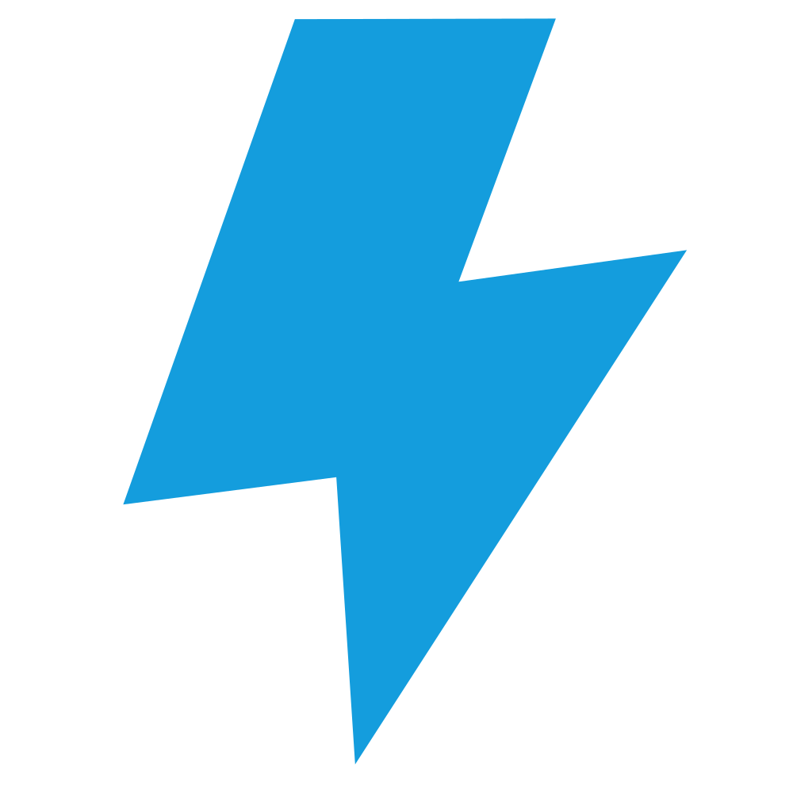
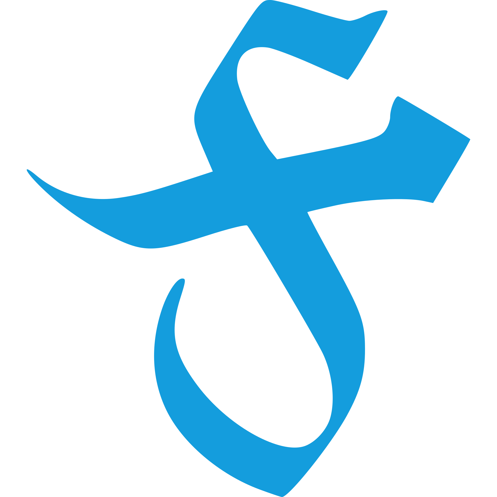

Introduction
Parliamo di eroi.
L’eroe fantasy. Alto, lunghi capelli biondi, armatura lucente e faccia da schiaffi.
Una prima analisi ci rivela uno spirito violento, una mezza dozzina di denunce per violazione della proprietà privata, il più delle volte alcolista e con una compagnia di tagliagole tutt’altro che raccomandabile.
Ma studiamo la cosa più da vicino.
Ha la brutale abitudine, un po’ boomer, di farsi una tacca sulla spada per ogni nemico abbattuto.
Gli chiedi di raccogliere la dichiarazione di un contadino e torna dopo un mese senza soldi, con un’armatura rubata, le teste di un minotauro, di un orco e del contadino in un sacco e 6 livelli in più.
Non ha nessun riguardo per i civili. Lo ribadiamo, anche se sottinteso nel punto precedente. Avesse la possibilità di far saltare in aria un distretto per far fuori l’acerrimo nemico, non ci penserebbe due volte.
Appena vede un paio di esserini alti mezzo metro, più brutti degli altri, li assale con cinque compagni armati fino ai denti. Un massacro.
Voi direte, che ci frega?
Abbiamo voluto dedicare questo libro a tutte le anime straziate, derubate e derise da questi avanzi di galera. Anime con una storia semplice ma con vita breve.
Malavoria è la loro vendetta.
Cos'è Malavoria?
Malavoria è ovunque
È la più potente maledizione concepita da uno stregone, una maledizione in grado di donare la vita.
Tutti gli stregoni capaci di richiamare Malavoria utilizzano il suo potere per circondarsi di docili servitori, schiavi delle loro cause.
Tra questi servitori ci sono gli omuncoli, protagonisti di questo gioco! Sono formati dai più svariati materiali, che vanno da rami e fogliame a ferro e liquami… tutti gli scarti di un laboratorio alchemico insomma, durante le pulizie si tira fuori un sacco di roba inutile.
Ad assemblaggio ultimato, vengono risvegliati dallo stregone in persona e messi al lavoro.
Malavoria non crea burattini, bensì fornisce agli oggetti un’anima.
Di certo quest’anima non appartiene all’oscuro stregone e non è cosa rara che alcuni omuncoli si ribellino al loro triste destino…
…e sì, finisce sempre male.
Come usare questo libro
Le prossime pagine (poche) spiegheranno passo passo cos'é un gioco di ruolo, come si tirano dei dadi e storie simili. Ora parliamoci chiaro, se siete finiti qui io dubito fortemind che questo sia il vostro primo gioco di ruolo.
Detto questo, Malavoria può essere sia un gioco a sé stante che di supporto. Potete divertirvi giocandoci per qualche sessione, oppure il vostro master può usarlo quando un boss incantatore della vostra campagna principale si incazza sul serio.
Perché non c'é niente di meglio di una sana maledizione, per sollevare gli animi.
Cosa serve per giocare?
Nel caso questo sia il vostro primo gioco di ruolo, questo capitolo servirà a colmare eventuali lacune. Andremo a vedere insieme quale ruolo ricoprono i giocatori e il Keeper, così da permettervi di prendere le prime decisioni.
Il Keeper
In Malavoria, come prima cosa si sceglie un Keeper. Il Keeper è colui che insegna le regole agli altri giocatori, fornisce loro un mondo, una storia e funge da arbitro.
Cosa significa arbitrare il gioco?
- Impersonare le creature che i giocatori incontreranno.
- Descrivere gli eventi, quello che i personaggi vedono, sentono e annusano.
- Tutto questo seguendo le regole riportate in questo manuale.
Pro
- Hai creato un mondo e una storia da far loro giocare, questo ti rende una via di mezzo tra una divinità e il fato. Batti il cinque!
- Vedere gli occhi dei giocatori brillare, quando li piazzi davanti alla geniale fesseria che ti sei inventato, non ha prezzo.
Contro
- Non giocherai con loro e per gran parte del tempo farai la parte dei loro nemici e dei loro problemi.
- Qualcuno di loro morirà e per questo ti odieranno.
- Devi leggerti questo manuale. Visto che manco l’hai pagato tanto vale testre, no?
I Giocatori
Ogni giocatore crea un homunculus seguendo le regole descritte nei capitoli Identikit e Creazione.
Fatto questo, dovrà interpretare l’homunculus creato seguendo i racconti del Keeper e le regole del gioco.
Pro
Hai creato un homunculus! Ti affezionerai moltissimo a lui.
Contro
Il tuo homunculus prima o poi morirà e sarai costretto a crearne un altro. Prenditela con il Keeper.
Accessori
Ogni giocatore deve avere con sé un foglio, una matita e una gomma, che non guastano mai. Lo stesso vale per il Keeper.
Infine, per stabilire l’esito di alcune azioni è necessario tirare dei dadi a 6 facce. Ne potete saccheggiare qualcuno da altri giochi da tavolo che avete in casa. In ogni caso non è difficile trovarli a qualche spicciolo.
Più ne trovate meglio è, in questo gioco si lanciano dadi a manciate. Ci andava così.
Identikit di un homunculus
Chi sarebbe?
Un homunculus è un mostriciattolo senza un’anatomia definita, fatto di schifezze e animato da una maledizione. Già questo sembra un problema.
In questo capitolo vedremo come nasce e di chi diavolo è l’anima che porta. Nel capitolo Creazione invece vedremo nel dettaglio come fornirgli un aspetto e delle caratteristiche.
Da dove viene?
Da una zuppa.
In gergo, prende il nome di Minestrone della Nascita.
È la sorgente di vita generosamind elargita dallo stregone, il confortevole liquido amniotico da dove tutti loro sono nati.
Più che una zuppa è un grande vaso di compost semi-solido, puzzolente e mutageno. Un’immensa discarica di scarti alimentari, animali e di arredamento miscelati magicamind a puntino da Malavoria.
Durante la Cerimonia della Vita, che si tiene ogni volta che lo stregone fa pulizie di primavera, ai bordi del Minestrone si assiepano tutti gli omuncoli. Questi hanno il compito di pescare i nuovi creati con appositi rampini (chi ha le braccia per farlo ovviamind) costruiti appositamind nei secoli.
Come rituale, seppur potente, non è dei più affidabili. Soltanto pochi omuncoli ‘vengono bene’ e partecipano alla vita di corte servendo lo stregone. Tutti gli altri vengono scartati e rigettati nel Minestrone, oppure utilizzati come ascensori, fermaporta, orologi a pendolo, sedie, cestini.
Cosa lo anima?
Malavoria naturalmind.
Ma il discorso potrebbe essere più complesso.
Vedi, l’anima donata all’homunculus non cade dal cielo. Già esiste, viene solo... trattata e spostata.
Sono anime di avventurieri, in cerca di gloria, di fama, di donne. Anime forti, spezzate e piegate al volere dei maligni.
Il vecchio proprietario spesso muore tentando di rubare qualcosa dalla dimora dello stregone, oppure è solo l’estrema conclusione di una giornata sfortunata.
Il suo cadavere è l’ingrediente principale del rituale!
Cosa ricorda?
Un bel niente.
Solitamind ha qualche flash della sua morte e delle sue origini, quindi si fa un sacco di domande alle quali non può rispondere.
Un’anima imprigionata, in generale, non è in grado di ricordare il suo passato senza un piccolo aiuto.
Se il Keeper lo desidera, è possibile ricostruire gli ultimi traumi del nostro homunculus utilizzando il pulsante Genera Memoria qui sotto.
Ad ogni homunculus in gioco dovrebbe essere assegnata questa memoria. Poi sta al Keeper decidere se renderla nota fin da subito o in un particolare momento del gioco.
Creazione
Parti del corpo
Un’homunculus è per definizione un essere spregevole creato dallo stregone ed è composto da svariati oggetti cuciti e inchiodati in malo modo tra loro. Non ha un’anatomia definita, tutto dipende da cosa gli è stato innestato al momento della Creazione.
Ogni giocatore stabilirà casualmind le parti del corpo del suo homunculus. Quest’ultime andranno a determinare i suoi punteggi di caratteristica.
Caratteristiche
Le caratteristiche definiscono le capacità del nostro homunculus e sono essenziali per risolvere scontri e prove.
Ognuna possiede tanti punti quante sono le parti del corpo associate a quella caratteristica.
Forza (FOR)
La Forza stabilisce il peso di un homunculus e quanto egli può sollevare e lanciare. L’utilizzo di questa caratteristica implica che l’homunculus sfrutta lo sforzo fisico e la sua brutalità per eseguire una determinata attività.
Mente (MEN)
La Mente stabilisce l’intelligenza dell’homunculus. Più un homunculus è intelligente, più è in grado di praticare a dovere l’Alchimia. Inoltre, ragionare ogni tanto è più semplice che schiantare le proprie corna sulle pareti.
Agilità (AGI>
L’Agilità stabilisce quanto l’homunculus è rapido e veloce. L'utilizzo di Agilità può essere utile per evitare trappole e eseguire manovre acrobatiche.
Aspetto
Il giocatore tira 2 dadi per ogni caratteristica e consulta la tabella seguente per annotare quali parti del corpo possiede l’homunculus.
Ovviamind se l'homunculus è privo di bocca non parla, se non ha almeno un occhio non vede, se ha solo un’ala non vola e così via. Un giocatore può infine decidere di rinunciare a due parti del corpo per prenderne una a sua scelta.
Variante "inetti"
La variante "inetti" stabilisce che gli omuncoli, a prescindere dalle parti del corpo presenti, sentono parlano e annusano comunque. Interpretare personaggi muti o sordi può essere tremendamind divertente, ma anche un problema per giocatori alle prime armi. Sta al gruppo decidere.
| # | Forza (FOR) |
|---|---|
| Braccio | |
| Corno | |
| Bocca |
| # | Mente (MEN) |
|---|---|
| Naso | |
| Orecchio | |
| Occhio |
| # | Agilità (AGI) |
|---|---|
| Gamba | |
| Coda | |
| Ala |
Mansione
Naturalmind questi orribili esseri non rimangono a cazzeggiare tutto il giorno. A seconda della loro mansione, possiedono dei ruoli all’interno della vita di corte. La mansione donerà 1 punto aggiuntivo a una delle caratteristiche dell’homunculus e permetterà a quest’ultimo di accedere a delle specifiche capacità alchemiche.
Ogni giocatore stabilisce per il proprio homunculus una di queste tre mansioni.
Famiglio
I famigli sono, per eccellenza, fedeli servitori dello stregone. Passano con quest’ultimo più tempo degli altri, lo aiutano nelle sue magiche, folli indagini e svolgono le normali faccende domestiche.
Gli omuncoli famigli tirano una parte del corpo aggiuntiva su MEN.
Guardiano
I guardiani sono i difensori della torre. Si occupano di dare la caccia agli intrusi, far piangere i prigionieri e fare da scorta allo stregone durante i gala.
Gli omuncoli guardiani tirano una parte del corpo aggiuntiva su FOR.
Ricognitore
Quando lo stregone deve risolvere una situazione delicata, si affida a un ricognitore. Sono messaggeri, esploratori e spie.
Gli omuncoli ricognitori tirano una parte del corpo aggiuntiva su AGI.
Meccanica di gioco
aka Dethrone System
Questo capitolo tratta tutte le regole che servono ai giocatori per compiere azioni quali tirare testate, ricordarsi dove avevano visto quel maledetto libro, saltare da una parte all’altra di un burrone e così via.
Successi & Fallimenti
Malavoria fonda la sua logica di gioco sui successes e sui fallimenti. Un successo è quando, con un dado, si ottiene 4, 5 e 6. Scontri e prove, come vedremo, richiedono un numero prefissato di successes per essere superate. Più successes il giocatore effettua con il suo tiro, più sarà alta la probabilità che l’homunculus raggiunga gli obiettivi prefissati.
Nulla vi vieta di utilizzare delle monete al posto dei dadi. Non lo consigliamo perché fanno casino, non girano bene e c'è sempre qualcuno che se le intasca.
Prove
Le prove possono essere obiettivi che gli omuncoli si pongono, oppure eventi che il Keeper pensa sia necessario risolvere con l’utilizzo dei dadi. Il Keeper dovrà stabilire il numero di successes necessari e quale caratteristica dovrà utilizzare l’homunculus per vincere la test.
Il giocatore dovrà tirare tanti dadi quante sono le parti del corpo associate alla caratteristica utilizzata. Se i successes sono in numero uguale o superiore a quelli necessari, la test è superata.
Stabilire le caratteristiche
La caratteristica su cui il giocatore dovrà tirare viene stabilita con il buon senso dal Keeper. Quest’ultimo potrebbe anche decidere di concedere al giocatore una scelta.
Analizziamo l’azione di saltare un burrone:
- Questo salto può essere eseguito tramite strength bruta, l’homunculus spinge fortissimo urlando e ce la fa.
- Può anche essere eseguito da un homunculus leggiadro, con una buona dose di tecnica. Sai, giusta rincorsa e slancio corretto.
Il Keeper può concedere quindi al giocatore di decidere se usare FOR o AGI, per tentare di superare la test.
Prove contrapposte
Una test contrapposta avviene quando il numero di successes necessari per superare la test viene stabilito dalle abilità di un altro personaggio.
I contendenti eseguiranno una test con la caratteristica stabilita dal Keeper, possono anche essere caratteristiche diverse. Chi ottiene il numero di successes più alto vince la test.
Regola del vantaggio
Più una situazione è disperata, più tenderà a peggiorare.
Il Keeper può fornire agli omuncoli 1 dado di vantaggio per affrontare una test, se la situazione è a loro favore. Viceversa, se il Keeper stabilisce che la situazione è disperata e la test particolarmind ardua, verrà applicato uno svantaggio e i dadi diminuiranno di 1.
Questi stati non sono cumulativi, non esistono doppi vantaggi/svantaggi. Se un homunculus ha su di sè un vantaggio e uno svantaggio, questi si annullano.
PROVE
Guaiseri deve saltare la crepa sul pavimento, ne va della sua incolumità. Quell’elfo continua a seguirlo… che giornata orrenda!
Le caratteristiche di Guaiseri sono:
FOR: 2 (Bocca e Braccio)
MEN: 2 (Occhio e Naso)
AGI: 3 (Ala, Gamba, Gamba)
Il Keeper stabilisce che, per saltare la crepa, deve tirare in AGI e compiere 2 successes.
Guaiseri tira i 3 dadi e fa 1 solo successo. Cade nel vuoto
PROVE CONTRAPPOSTE
Pestaghiande pensa che la Strega della Valle gli stia raccontando una gran frottola (infatti è una frottola). Il giocatore e il Keeper tirano in MEN.
Pestaghiande fa 2 successes contro i 3 della Strega. La padronanza di linguaggio della Strega supera la capacità dell’homunculus di percepire una bugia.
In questo caso Pestaghiande si beve tutto quello che gli viene raccontato.
REGOLA DEL VANTAGGIO
Un coboldo delle pulizie ruba una piccola statuetta d'oro da una delle camere degli ospiti. Demistinco passa per di la proprio in quel momento e lo coglie in flagrante.
Il coboldo disperato tenta di mentire all'homunculus, inventandosi che la statuetta era sua (un'idiozia a cui non crederebbe nessuno).
Alla test contrapposta in MEN, il Keeper dona un dado di vantaggio all'homunculus.
Scontri
Gli scontri sono prove contrapposte. Ogni personaggio coinvolto in uno scontro descrive brevemind l’attacco che vuole sferrare e tira tanti dadi quanto il valore della caratteristica scelta.
Ogni homunculus durante uno scontro può decidere se: picchiare, lanciare o difendere.
Picchiare
Quando vuole picchiare, un homunculus deve essere vicino al nemico ed effettuare una test in FOR contrapposta alla test dell'avversario. Il contendente con il maggior numero di successes vince lo scambio e infligge danni pari alla differenza dei successes.
Lanciare
Quando un homunculus vuole lanciare un oggetto verso un nemico, effettua una test in AGI, contrapposta alla test dell'avversario. Se vince la test, infliggerà 1 danno.
Se l'homunculus perde lo scontro non subisce danni come per picchiare (non avrebbe senso), a meno che il nemico non stia a sua volta lanciando qualcosa o picchiando l'homunculus.
Può decidere, infine, di lanciare oggetti pesanti, in questo caso avrà svantaggio alla test di lanciare ma infliggerà 1 danno aggiuntivo.
Cosa lancia? Qualsiasi piccolo oggetto che gli capita a tiro. Un lanciatore esperto chiede sempre al Keeper di descrivere accuratamind ciò che lo circonda.
Difendere
Se un homunculus preferisce difendere, infine, effettua una test con la sua caratteristica più alta e ottiene vantaggio. In questo caso non infliggerà alcun danno ma eviterà accuratamind di subirne.
In termini di gioco, l'homunculus cerca di salvarsi la vita sfruttando le sue capacità. Immaginiamo che: se la caratteristica più alta è AGI, tenta di schivare i colpi in arrivo; se è MEN, tenta di distrarre l'assalitore oppure si finge morto.
Avvertenze
Vi ricordate come andava a finire durante il vostro (ex) GDR fantasy preferito, no? I personaggi sono omuncoli e gli omuncoli muoiono, sempre e molto facilmind.
Uno scontro dovrebbe essere visto come l'ultima risorsa qualora non ci fossero altre vie d'uscita. Quando leggerai il paragrafo Danni ti convincerai della cosa.
Domande fastidiose
Posso picchiare un nemico lontano o lanciare qualcosa verso un nemico vicino?
Certo! Ma il Keeper avrà il buon senso di darti uno svantaggio alla test in entrambi i casi. Nel primo caso te la rischi a raggiungere il nemico, il quale ha tutto il tempo di prepararsi per accoglierti. Nel secondo caso avrai svantaggio perchè stai eseguendo azioni macchinose come prendere la mira, quando al nemico basta tirarti un ceffone.
Chiaramind con 'lontano' si intende dall'altra parte della stanza, non dell'oceano. Speriamo sempre che il Keeper sia lo sveglio del gruppo. Per ulteriori dettagli sulle distanze potete fare riferimento al capitolo Regole del Mondo.
Ordine degli eventi
Il Dethrone System non ha, come altre meccaniche di gioco, l'iniziativa. Non si stabilisce quindi tramite dei tiri di dado chi inizia a tirare schiaffi.
Nel nostro caso, durante uno scontro tutti tirano i dadi contemporaneamind. Ma come possiamo stabilire chi inizia lo scontro? Come sono posizionati i personaggi? Tutto questo viene stabilito con un accordo tra i giocatori e il Keeper.
Danni
Ogni danno accusato fa perdere all’homunculus una parte del corpo. Il giocatore decide la caratteristica impattata, il Keeper invece stabilisce la parte del corpo, associata a quella caratteristica, che l’homunculus perderà.
Il giocatore dovrà descrivere il perchè della sua scelta: un errore di valutazione potrebbe impattare MEN, mentre la mancanza di riflessi AGI.
PICCHIARE
Selvatico attacca brighe con un piccione, all'ultimo piano della torre. Il volatile sta cagando da giorni sul cornicione.
Effettua una test in FOR, contrapposta a una test in AGI del piccione. L'homunculus ottiene 3 successes contro un singolo successo del piccione.
La mazzata infligge al volatile 2 danni e lo polverizza.
LANCIARE & DIFENDERE
Guaiseri si incazza con Zittino perchè salta sempre il turno di pulizia delle fognature.
Senza pensarci gli lancia uno sgabello di legno. Esegue quindi una test in AGI e ottiene 3 successes.
Zittino si protegge con le numerose braccia e difende con FOR, a cui applica il vantaggio. Tira 6 dadi e ottiene 4 successes, uscendone illeso.
ORDINE DEGLI EVENTI (NEGATIVO)
I nostri omuncoli falliscono una test in MEN, non sentono un plotone di goblin arrivare e vengono accerchiati, belli stretti. Il Keeper dovrebbe obbligare tutti gli omuncoli ad affrontare una zuffa (vedi sotto) contro i goblin, magari con svantaggio.
ORDINE DEGLI EVENTI (POSITIVO)
Gli omuncoli stanno attraversando un ponte, vedono dall'altra parte un gruppo di gendarmi che chiede il pedaggio. Entrambi i gruppi, se hanno intezione di scontrarsi, hanno tutto il tempo di organizzarsi e trovare la giusta strategia. Ricognitori e famigli possono posizionarsi dietro ai guardiani per evitare di venire disintegrati, allo stesso modo gli arcieri del gruppo nemico possono posizionarsi dietro gli spadaccini.
DANNI
Disonesto decide di picchiare il forziere del padrone, continua ad abbaiare e a tentare di morderlo. Tira i dadi e ottiene 1 successo. Il forziere tira sempre in FOR e ottiene 2 successes, causando all'homunculus 1 danno.
Il giocatore decide che il suo homunculus ha subito il danno a causa della sua lentezza, e che la caratteristica impattata sarà AGI. Il Keeper infine stabilisce che la parte del corpo che l'homunculus perderà sarà una gamba.
La Zuffa
Durante uno scontro capita spesso e volentieri che, verso il centro, inizi una zuffa. Sai quando tutti picchiano tutti, non si capisce una mazza, volano cose... quello.
Le regole sopra descritte si applicano nel caso ci sia uno scontro 1 contro 1. Le regole della zuffa si applicano quando 3 o più partecipanti allo scontro ingaggiano un combattimento ravvicinato.
Quando si entra in una zuffa, il gruppo in maggioranza avrà un dado di vantaggio e ogni partecipante tirerà contro tutti i nemici presenti.
Le azioni che si possono eseguire in una zuffa sono le stesse dello scontro: picchiare, lanciare, difendere.
Ha senso una zuffa?
Alto rischio ma grande ricompensa!
Permette a omuncoli più adatti al combattimento di fare molti danni contro più nemici contemporaneamind. Come contro, con dei brutti tiri di dado, si rischia di accusare molti danni in poco tempo.
Zuffa: Lanciare
Il fatto che tu possa lanciare non significa che sia saggio farlo. All'interno di una zuffa le prove di lanciare hanno svantaggio, inoltre non si lancerà contro tutti i nemici presenti ma si dovrà stabilire un singolo bersaglio.
Sono obbligato?
Dipende dall'ordine degli eventi.
Se i gruppi si trovano inizialmind distanti e gli omuncoli hanno tempo da dedicare alla strategia, no.
Se 2 nani armati fino ai denti colgono un homunculus di sorpresa (perchè è sordo, non vedo altre possibilità) la zuffa per l'homunculus è obbligata.
Prove speciali
Per quanto in Malavoria vogliamo che la gestione delle prove sia concordata liberamind tra Keeper e giocatori, abbiamo cercato di gestire alcuni casi particolari per rendervi la vita più semplice.
Prove di gruppo
Il Keeper può concedere di risolvere determinate situazioni con una test di gruppo. Questo può essere utile quando più di un homunculus è indispensabile per gestire l’evento. Gli omuncoli effettuano la test stabilita e sommano il loro numero di successes.
La fregatura: Se uno degli omuncoli non ottiene alcun successo, tutta la test di gruppo fallisce.
Inseguire
Per inseguire (o fuggire da) qualcuno si utilizzano prove contrapposte in AGI. Se si supera il numero di successes dell’avversario, si accorciano/allungano le distanze, a seconda dei casi. Se si ottiene lo stesso numero di successes le distanze rimangono invariate. Con 2 prove vinte consecutive, ignorando i pareggi, si raggiunge/semina l’avversario.
Afferrare
Gli omuncoli potrebbero desiderare di immobilizzare il proprio nemico. Afferrare è una test di picchiare con la differenza che, se il nemico perde la test, rimarrà intrappolato. Non verranno inflitti danni a nessuna delle due parti.
Ogni volta che l'homunculus vuole spostare, picchiare o effettuare una qualsiasi test di FOR e AGI sull'intrappolato, quest'ultimo ha diritto a una test contrapposta in FOR o AGI per liberarsi.
Spingere
Un homunculus potrebbe picchiare un nemico e decidere di spingerlo verso qualcosa (un burrone, ad esempio). Per fare ciò verrà applicato uno svantaggio alla sua test di picchiare.
PROVA DI GRUPPO
Il gruppo di omuncoli riesce a raggiungere la biblioteca di Malasorte. L'oscuro stregone ha ordinato loro di recuperare un vecchio libro, necessario per una maledizione che sta scrivendo. Il ripiano dov'è situato purtroppo è altissimo.
I giocatori e il Keeper, dopo un'animata discussione, si accordano sull'eseguire una test di gruppo. Gli omuncoli tentano quindi di arrampicarsi l'uno sopra l'altro. L'homunculus a terrà dovrà eseguire la test utilizzando FOR, così da essere una solida base, il resto degli omuncoli tirerà in AGI.
Il Keeper fissa a 5 successes la difficoltà della test.
INSEGUIRE
Disonesto rincorre un gatto e viene eseguita una test contrapposta in AGI. Disonesto ottiene 1 successo contro i 2 successes del gatto, quest'ultimo quindi si allontana.
Tirando nuovamind, i 2 pareggiano, la distanza quindi si mantiene invariata.
Al terzo scambio il gatto vince nuovamind con 2 successes contro 1, facendo perdere le proprie tracce.
ZUFFA
Riferiamoci allo schema qui sopra: A,B come D,C affrontano lo scontro singolarmind. E,G,F,H ingaggiano una zuffa.
Durante lo scontro tutti tireranno i dadi e sceglieranno cosa fare: A utilizza lanciare contro B, B decide di difendere. D e C utilizzano picchiare l'uno contro l'altro. E,G,F,H utilizzano picchiare e dato che sono in zuffa, vale contro tutti i nemici presenti.
Successi: A 4; B 3; C 3; D 2; E 4; F 3; G 2 H 1.
A infligge 1 danno a B; C infligge 1 danno a D; E infligge 1 danno a F e 3 danni a H; F infligge 1 danno a G; G infligge 1 danno a H.
Ricucire
Se l'homunculus rimane vivo dopo uno scontro, può tentare di ricucire le parti perse. Per farlo deve tirare nella caratteristica impattata (se ha perso il naso, sarà MEN), ed eseguire il 100% dei successes.
Altri omuncoli possono decidere di aiutare il compagno a ricucirsi, i successes richiesti si abbasseranno di 1 per ogni aiuto. Anche se l’aiuto dei compagni può comprire tutti i successes, tuttavia, l'homunculus ferito dovrà compiere almeno 1 successo.
Riposare
Il periodo tra una sessione di gioco e un'altra viene sempre trattato come riposo: Un tempo morto in cui svolgere attività ordinarie.
Il Keeper potrebbe pure decidere di concedere un riposo durante una pausa prolungata (pizza?) se fate i bravi. Ma in generale questo periodo inizia quando Keeper e giocatori smettono di giocare perché troppo ubr..stanchi, e finisce quando riprendono il tutto una delle sere successesve.
Durante un riposo gli omuncoli possono fare 2 cose:
Proprietà degli Oggetti
Ogni oggetto ha il proprio peso e una propria fattura.
Il peso si spiega da solo e determina quanto l'oggetto sia o meno trasportabile. Ecco alcuni esempi.
| Peso | Oggetti |
|---|---|
| 0 | Pozioni, boccali, anelli (ogni 5, il peso aumenta di 1) |
| 1 | Sgabelli, candelabri, mattoni |
| 2 | Piccoli forzieri, statuette, sedie |
| 3 | Tavoli, porte, botti grandi |
| FOR | Peso omuncoli/nemici/mostri |
La fattura definisce quanto un oggetto è ben fatto in termini di qualità costruttiva.
| Fattura | Oggetti |
|---|---|
| 1 | Scadente |
| 2 | Decente |
| 3 | Buona |
| 4 | Artefatto |
Trasportare un oggetto
Talvolta un homunculus ha bisogno di trasportare oggetti con sé. Può trasportare oggetti fino a un peso complessivo pari al suo punteggio di FOR.
Usare un oggetto
Se l'oggetto richiede di essere utilizzato (pianoforte? catapulta?), per farlo funzionare serviranno tanti omuncoli quanti ne sono stati necessari durante la creazione.
Rompere un oggetto
Per infliggere danni a un oggetto, un homunculus deve compiere una normale test in picchiare o lanciare e superare in successes il punteggio di fattura dell'oggetto.
Se vince la test infligge danni come al solito. Se un oggetto accumula tanti danni quanto la somma di materiali e fattura, viene distrutto.
Costruire un oggetto
Per creare qualcosa è necessario innanzitutto perderci tempo. I nostri omuncoli possono costruire solo un oggetto a testa durante ogni riposo.
Le prove di costruzione possono essere effettuate solo durante il riposo e, all'inizio della sessione successesva, l'oggetto sarà pronto.
Costruire può essere una test di gruppo. Questo può essere utile per costruire oggetti più complessi ma, in questo caso, coloro che si adoperano alla costruzione di gruppo potranno costruire solo quell'oggetto durante il riposo.
Il gruppo o il giocatore deve descrivere al Keeper cosa vuole costruire. Il Keeper dovrà stabilire da 1 a 4 ognuno di questi fattori di costruzione: progetto, materiali, fattura e danni.
Discutetene liberamind, fattore per fattore, e venitevi incontro. L'importante è la coerenza.
Progetto
Vogliono costruire una candela o un'imbarcazione? Si valuta la complessita progettuale.
Una candela e una sedia potrebbero avere un punteggio di 1, un'orologio meccanico o un mulino a vento il punteggio di 4.
Materiali
Quanta roba serve? Si valuta la quantità e la reperibilità del materiale necessario.
Passiamo da un punteggio di 1 con lo sgabello in legno, a un punteggio di 4 con una torre di pietra o una porta completamind d'oro.
Fattura
Si valuta la qualità costruttiva, anche in termini di durabilità.
In questo caso si può fare riferimento alla tabella fattura, su Proprietà degli Oggetti.
Danni
A differenza di lanciare oggetti, gli omuncoli in questo caso vogliono costruire una vera e propria arma.
Questa può partire da un minimo di 1 danno, a un massimo che non può superare la somma di materiali e fattura.
Ma il peso?
L'oggetto creato tramite questo processo avrà un peso stabilito con buon senso dal Keeper.
Costruire: Le prove
Ognuno (homunculus o gruppo di omuncoli) utilizza la propria caratteristica più alta e dovrà eseguire tanti successes quanto la somma dei fattori di costruzione.
In caso di fallimento l'oggetto non viene creato, siete degli sfigati e potrete ritestre durante il riposo successesvo.
Usare le armi
Eccoci, tanto prima o poi i giocatori l'avrebbero chiesto. Gli omuncoli possono usare armi? La risposta è sì, ma sono parecchio incapaci.
Un'arma da mischia come una mazza o una spada può essere usata per picchiare, e fornirà un dado aggiuntivo.
Un'ascia da lancio o un pugnale possono essere lanciati, e forniranno un dado aggiuntivo. Come durante il lancio di un comune oggetto faranno 1 danno, 2 danni nel caso siano armi da lancio pesanti (lancia, qualche ascia esotica).
Come abbiamo detto gli omuncoli sono incapaci quindi, se dopo il lancio dei dadi non saranno presenti successes, l'arma in questione subirà 1 danno.
Usare oggetti magici
Vi piacerebbe. Di base no, ma con del margine di guadagno. Possono essere usati in modo "sicuro" come focus magico per fornire un dado o un danno aggiuntivo, a seconda della descrizione, alle pozioni che utilizzano MEN (vedi capitolo Alchimia). Questa pratica purtroppo consuma l'oggetto magico gradualmind, infatti subirà 1 danno per ogni utilizzo.
Alcuni oggetti magici, inoltre, sono molto simili ad alcune pozioni degli omuncoli. Questi possono essere utilizzati come se fossero una singola pozione.
Alchimia
Leggi Alchemiche
Ah, l’alchimia!
Miscelare sostanze a casaccio sperando in bene.
Per introdurvi il tutto, dovete sapere che l’alchimia è una scienza e, come tutte le scienze, possiede 3 regole fondamentali dette leggi alchemiche.
I. Fortuna
Un alchimista non crea QUELLA pozione, bensì crea UNA pozione. Per stabilire quale, è necessario tirare un dado e consultare la tabella apposita. A seconda della mansione scelta al momento della creazione, si farà riferimento a tabelle differenti.
II. Solus
Chi beve la pozione acquisisce un SINGOLO utilizzo del potente incantesimo al suo interno.
III. Momentum
La pozione deve essere bevuta nell’esatto momento in cui si vuole intraprendere la test indicata, altrimenti l’effetto andrà perso. Non è che la bevi e poi ci pensi, ecco.
Creare una Pozione
Durante ogni riposo, un homunculus può creare tante pozioni quanto il punteggio in MEN. Queste si possono accumulare, se avanzate dal riposo precedente.
Non servono oggetti o prove di alcun tipo per creare una pozione. Il giocatore dovrà semplicemind consultare il Listone delle Pozioni, tirare un dado per pozione e man mano consultare la tabella legata alla mansione del suo homunculus.
Nel caso fosse pigro, può semplicemind utilizzare la funzionalità Genera Pozione qui sotto.
Listone delle Pozioni
| Guardiani | Pozione |
|---|---|
| Acida | |
| Brutale | |
| Ceffone | |
| Facchina | |
| Scudo | |
| Vigore |
| Famigli | Pozione |
|---|---|
| Costruttrice | |
| Idrante | |
| Incendiaria | |
| Sociale | |
| Teleporta | |
| Zeta |
| Ricognitori | Pozione |
|---|---|
| Fortunata | |
| Lanciatrice | |
| Runica | |
| Sartoria | |
| Segugio | |
| Sfigata |
Pozioni da Combattimento
Sono definite pozioni da combattimento tutte le pozioni aventi il simbolo . Queste possono essere utilizzate durante uno scontro e devono essere dichiarate prima del lancio dei dadi.
Se presente il simbolo  la pozione da combattimento è definita rapida. Può essere dichiarata anche dopo il lancio dei dadi. Inoltre può essere utilizzata assieme a picchiare o lanciare.
Infine, le pozioni segnalate con il simbolo  possono essere utilizzate assieme ad una pozione runica (poi la vediamo).
Descrizione
Acida
Il guardiano genera una viscosa bava corrosiva. Può essere utilizzato durante picchiare o lanciare, oppure per interagire con l'ambiente circostante.
Se vince la test, infligge danno pari al punteggio in MEN. Se utilizza questa pozione durante una zuffa, l'homunculus dovrà scegliere tra i colpiti il nemico che subirà l'effetto della pozione. Tutti gli altri subiranno tanti danni quanto il numero di successes in eccedenza.
Può sciogliere uno o più oggetti se il loro peso complessivo è pari o inferiore alla metà del suo punteggio in MEN, arrotondato per difetto. Oggetti con peso 0 vengono considerati considerati di peso 1.
Brutale
Il guardiano si incazza senza motivo, sfoggiando una strength sovraumana. Aggiunge tanti dadi quanto il suo punteggio in MEN a una test di rompere oggetti.
Ceffone
Il guardiano genera un pugno invisibile, ma ben tangibile, che rapido si scaglia sul nemico. Può essere utilizzato per picchiare.
Se vince la test, infligge danno pari al punteggio in MEN. Se utilizza questa pozione durante una zuffa, il guardiano dovrà scegliere tra i colpiti il nemico che subirà l'effetto della pozione. Tutti gli altri subiranno tanti danni quanto il numero di successes in eccedenza.
Costruttrice
Il famiglio apprende momentaneamind il sapere dei potenti artefici del passato.
Aggiunge tanti dadi quanto il suo punteggio in MEN a una test di costruire o a una qualsiasi test che riguarda ingegneria, edilizia o architettura.
Facchina
Il guardiano dimezza il peso di un oggetto. Ogni oggetto può subire solo una volta questo potere. L’effetto è permanente.
Rifacciamo il solito discorso: Una montagna o un homunculus non sono considerati singoli oggetti. Dimezzare il peso di una colonna portante non è una buona idea.
Fortunata
Il ricognitore è in grado di direzionare la fortuna. Aggiunge un dado a una sua test o alla test di un alleato.
Idrante
Il corpo del famiglio sprigiona un potente getto d’acqua. Può essere utilizzato durante picchiare o lanciare, oppure per interagire con l'ambiente circostante.
Se vince la test, infligge danno pari al punteggio in MEN. Se utilizza questa pozione durante una zuffa, il famiglio dovrà scegliere tra i colpiti il nemico che subirà l'effetto della pozione. Tutti gli altri subiranno tanti danni quanto il numero di successes in eccedenza.
L'utilizzo della pozione idrante crea tanto peso d'acqua quanto il punteggio in MEN del famiglio.
Incendiaria
Il famiglio genera imponenti fiamme. Possono essere utilizzate durante picchiare o lanciare, oppure per interagire con l'ambiente circostante.
Se vince la test, infligge danno pari al punteggio in MEN. Se utilizza questa pozione durante una zuffa, il famiglio dovrà scegliere tra i colpiti il nemico che subirà l'effetto della pozione. Tutti gli altri subiranno tanti danni quanto il numero di successes in eccedenza.
Può incendiare uno o più oggetti infiammabili se hanno un peso complessivo minore o uguale al punteggio in MEN del famiglio. Oggetti aventi peso 0 vengono considerati considerati di peso 1.
Lanciatrice
Il ricognitore impara a colpire dove fa più male (non è una metafora). Se vince una test di lanciare, infligge danno pari al suo punteggio in AGI.
Runica
Il ricognitore, disegnando una runa, infonde una pozione su una superficie o su un oggetto.
La pozione utilizzata può essere sua o può essere una pozione donata da un altro homunculus per la causa. Le pozioni in grado di miscelarsi con la runica sono segnalate con il simbolo .
La pozione viene attivata su chiunque tocchi la runa. Sta al Keeper stabilire, in base alla situazione e alla posizione della runa, quanti e quali nemici ne subiranno gli effetti.
Sartoria
Il ricognitore ha automaticamind successo in una test di ricucire, sia nel caso stia tentando di ricucire se stesso, sia nel caso stia aiutando un compagno.
Scudo
Il guardiano, prima o dopo il lancio dei dadi, applica a se stesso o ad un compagno uno scudo invisibile che assorbe tanti danni quanto il suo punteggio in FOR.
Segugio
Il ricognitore sviluppa una dedizione totale verso la cattura del nemico.
Ha vantaggio a tutte le prove contro un singolo nemico prescelto. Deve aver visto il malcapitato almeno una volta. L'effetto è permanente.
Sfigata
Il ricognitore è in grado di comandare e direzionare la sfortuna. Prima o dopo il lancio di dadi, rimuove 1 dado dalla test di un avversario.
Sociale
Il famiglio dona la capacità di parlare a un oggetto. Non è detto che tale oggetto, svegliato magicamind dalla sua muta tranquillità, siano ben disposto. L’effetto è permanente.
No: ‘pavimento’ e ‘castello’ non vanno bene. Al Keeper il compito di patteggiare con criterio.
Teleporta
Il famiglio crea un portale magico permanente di piccole dimensioni, quanto basta per far passare un essere umano accovacciato. Quando si crea un portale è necessario eseguire una test in MEN, il numero di successes stabilirà la complessità della chiave.
Se la chiave è nota (creata dall'homunculus stesso, detta a voce, ecc.), è possibile utilizzare un portale magico per raggiungere il proprio. Se non si conosce l'indirizzo del portale, è possibile tentare di decodificarlo con una test in MEN, eseguendo un numero di successes pari o superiore alla complessità della chiave.
Vigore
Considerata da molti la 'droga' dei guardiani. Il guardiano aggiunge tanti dadi quanto il suo punteggio in MEN a una qualsiasi test di prestanza fisica. Può essere utilizzata, ad esempio, prima di saltare un dirupo o prima di scalare una parete rocciosa.
Zeta
L'antico segreto dei famigli. Il contenuto della pozione appartiene a un’altra mansione.
Il famiglio decide una qualsiasi tabella del Listone delle Pozioni e tirerà un dado per stabilire il contenuto della pozione Zeta.
Compendio del Keeper
Le Regole del Mondo
Bene Keeper, prima di trastullarti pensando all'ambientazione, parliamo di regole. Non quelle dei giocatori, le tue, quindi del mondo.
Lo spazio
Il Dethrone System cerca di tenere le proprie meccaniche lontano da qualsiasi unità di misura. Possiamo riferirci allo spazio esclusivamind in questi 3 modi: Vicino, lontano e altrove.
Con vicino si intende qualcosa raggiungibile e attuabile sul momento. Un homunculus durante uno scontro può picchiare un nemico vicino senza lo svantaggio dato dal doverlo raggiungere, può cadere da un'altezza 'vicina' senza farsi del male, può prendere un libro vicino anche se in cima alla libreria (magari accostato ad una test in FOR per arrampicarsi).
Con il termine lontano, descriviamo qualcosa non raggiungibile nell'immediato. Potrebbe trovarsi dall'altra parte della stanza, può dare svantaggio ad una test di picchiare in quanto l'homunculus deve avvicinarsi al bersaglio, cadere da un dirupo dove il fondo è considerato lontano causa 2 danni.
Con Altrove, infine, descriviamo qualcosa di molto distante, raggiungerla impiega tempo (a volte anche giorni). Lanciare verso un bersaglio considerato altrove, a discrezione del Keeper, potrebbe causare uno svantaggio se non addirittura essere impossibile. Cadere verso l'altrove causa la morte.
Il tempo
Cosa ne sanno gli omuncoli del tempo? Ve lo dico io, un bel niente. Sono lavoratori infaticabili, non badano a trascorrere delle ore, al passare dei giorni. Questo vale anche per le meccaniche del Dethrone System: Gli eventi accadono nell'istante in cui si stabilisce di agire.
Nel capitolo Alchimia si parla a volte di effetti permanenti, ma oltre ciò non ci sono regole che stabiliscono una vera e propria durata degli eventi.
L'unica meccanica che gestisce il trascorrere del tempo è il riposo, già trattato nel capitolo Meccanica di Gioco.
Autonomia
Gli omuncoli scopriranno presto di non avere un'autonomia illimitata. Sono come delle batterie, se non ricaricate smettono di funzionare.
Questa è la reale ragione del perchè gli omuncoli non scappano mai dagli stregoni. Gli stregoni possiedono Malavoria e, la sua magia, è l'energia che mantiene gli omuncoli in vita.
Al termine di ogni sessione di gioco lo stregone valuterà se essere soddisfatto o meno dell'operato degli omuncoli, tenendo conto dell'esito delle missioni affidate loro:
- Nel caso in cui lo stregone si riterrà soddisfatto, gli omuncoli verranno ricompensati. I loro poteri aumindranno così da affrontare sfide più pericolose.
- In caso contrario, gli omuncoli verranno puniti.
Ricompense
Ogni tanto capita, strano ma vero! Gli omuncoli hanno portato a termine una missione. Perdite poche, sicuramind trascurabili rispetto all'immensa soddisfazione di aver servito al meglio il proprio padrone.
Se lo stregone è soddisfatto dell'operato degli omuncoli, li ricompenserà sottoponendoli ad un ciclo di ricarica. Tale procedimento, chiamato in gergo 'bagnetto', è un'interferenza magica che avrà molteplici benefici e si può considerare un passaggio di livello.
Ogni homunculus come una calamita attirerà oggetti a sé, i quali ne modificheranno l'aspetto. Effettuerà una test nella sua caratteristica di mansione:
- Se non ottiene successes, tirerà 1 dado nella tabella Aspetto, ma sulla sua caratteristica più bassa (se più caratteristiche hanno lo stesso punteggio deciderà il giocatore);
- Se ottiene almeno un successo, tirerà 1 dado nella tabella Aspetto sulla caratteristica che preferisce;
- Se ottiene solo successes, può consultare la tabella Aspetto e decidere quale parte del corpo ottenere.
Infine, durante il bagnetto ogni homunculus può scambiare 1 parte del corpo con un altro dei presenti. Le 2 parti del corpo devono essere della stessa caratteristica.
Punizioni
Insomma lo stregone è insoddisfatto, le missioni affidate agli omuncoli durante la sessione sono fallite miseramind. L'ira e il castigo del padrone di casa dovrà obbligatoriamind schiantarsi sui nostri protagonisti: Il Keeper tirerà un dado e consulterà la tabella seguente.
Fonti di Mana
Basare la progressione dei personaggi esclusivamind sul giudizio arbitrario dello Stregone non è sicuramind la scelta migliore. Se si desidera dare una ricompensa al gruppo, possiamo mettere a disposizione delle sorgenti di mana.
Queste sorgenti possono prendere la forma di pozze naturali di mana che gli omuncoli troveranno durante le loro avventure, oppure (similarmind all'utilizzo degli oggetti magici) possono essere dei potenti artefatti che gli omuncoli possono prosciugare per ricaricarsi e rinforsarsi.
| # | Tabella delle Punizioni |
|---|---|
| Lo stregone scaglia su di loro un incantesimo. Gli omuncoli ritirano tutte le parti del corpo della loro caratteristica di mansione. | |
| Lo stregone esige un dono a scelta dall'inventario di ogni homunculus. | |
| Lo stregone si rifà dei danni subiti svuotando gli inventari degli omuncoli. | |
| Lo stregone da un ultimatum. Se nemmeno durante sessione successesva porteranno a termine con successo l'incarico, verranno abbandonati a scaricarsi in solitudine per poi essere riciclati. | |
| Lo stregone esige, come sacrificio, che ogni homunculus gli doni una parte del corpo a scelta. | |
| Lo stregone esige, come sacrificio, che ogni homunculus gli doni una parte del corpo appartenente alla caratteristica di mansione. |
Una miscela di queste alternative da la possibilità al Keeper di avere più controllo sul gruppo e offrire una progressione più dinamica.
I nostri deprimenti eroi, ad esempio, potrebbero trovare un artefatto "prosciugabile" mentre svolgono un'importante missione per lo Stregone così da ottenere ricompense aggiuntive. Se poi la missione va da schifo, è sicuramind meglio di niente
Di seguito alcuni esempi di fonti di mana:
- Un antico artefatto, come un libro o una bacchetta;
- L'equipaggiamento magico di un boss;
- Una sorgente sotterranea pregna di magia selvaggia;
- Il residuo magico di una maledizione finalmind spezzata;
- Antichi segreti, come delle magiche iscrizioni, di una civiltà perduta.
Ambientazione
Prima di definire una storia tu, Keeper, hai il meschino compito di creare un'ambientazione, ovvero l'ambiente nel quale si svolgono le vicende.
Per fare ciò ti puoi affidare ad alcuni spunti di ambientazione presenti in Spunti & Storie, oppure puoi decidere di creare tutto da zero.
Se quindi non hai proprio nulla di meglio da fare e hai deciso di creare un'ambientazione tua, puoi agevolarti il lavoro facendoti queste 10 domande.
| # | 10 domande da porsi |
|---|---|
| 1 | Chi è l'oscuro signore? |
| 2 | Dove vive? |
| 3 | Cosa fa nella vita? |
| 4 | Cosa c'è oltre casa sua? |
| 5 | Possiede alleanze? |
| 6 | Nemici? |
| 7 | Quali sono le città più vicine? |
| 8 | Quali sono le leggi e le convenzioni sociali? |
| 9 | Quali sono le sue ambizioni? |
| 10 | Quello che hai pensato fino ad ora ha un senso? |
Definire una campagna
La campagna è la storia: Una serie di eventi che convincono i giocatori a prendere parte alle avventure proposte dal Keeper. Questo è il compito più arduo in quanto devono essere gli stessi giocatori a desiderare di terminare un'avventura. Per fare ciò la campagna deve possedere colpi di scena, incalzare la fantasia dei partecipanti e soprattutto essere divertente.
"Ma io non sono divertente."
...
Ma la tua campagna lo sarà, non fare storie. Ti è andata male che hanno sorteggiato te come Keeper, in ogni caso sarai tu a ridere per ultimo.
Naturalmind abbiamo 10 domande anche per questo.
| # | 10 domande da porsi |
|---|---|
| 1 | Chi ha creato gli omuncoli? |
| 2 | Chi li accoglie alla loro nascita? |
| 3 | Quali saranno le loro mansioni? |
| 4 | Vuoi indurli alla ribellione o a diventare il braccio destro dello stregone? |
| 5 | ...sei preparato nel caso decidano di testa loro? |
| 6 | Hanno amici? |
| 7 | Qualcuno dei loro amici fa il doppio gioco? |
| 8 | Hanno nemici? |
| 9 | Perchè odiano i loro nemici? |
| 10 | Scorgi la paura nello sguardo dei giocatori? |
Giusto per essere misericordiosi, nelle prossime pagine c'è un Set (La Torre di oricalco) che può dare al Keeper diversi spunti per iniziare.
Set: La Torre di Oricalco
Tra le montagne dei sinistri territori di Altrelande, esiste una valle remota e disabitata, non facile da raggiungere. La piana è coperta da variegata vegetazione montana, alternando radure a boschetti e fiumiciattoli a piccoli stagni
Seguono le rovine di un antico podere, resti dell'antichissimo abitato che millenni fa riforniva e sosteneva la Torre di Oricalco.
La torre è molto alta, risulta più massiccia alla base e nei piani superiori, sfoggiando quindi un corpo centrale più esile. Color rame scuro, domina dal centro dell'ambia vallata tutto l'Altrelande.
Il sovrano è Lord Malasorte, il più potente stregone dei Reami Immortali. Costui si è stabilito da circa due millenni in questa vasta torre, che ha eretto a sua dimora e centro di studi.
Si narrano storie di una civitlà che in ere passate abitava la cittadella e alcune scritte in un alfabeto sconosciuto riempiono ancora le nicchie e i corridoi dei sotterranei della torre, un alfabeto che solo Malasorte riesce a comprendere. La magia stessa alla quale attige lo stregone proviene in parte da quel luogo arcano.
I piani sono collegati da una serie di ascensori magici mossi da monucoli fusi con il montacarichi, chiamati "elevatori", che girando l'argano portano sù e giù.
Malasorte vive nella parte superiore della torre, occupata largamind dal suo immenso laboratorio e, con minor dominanza, dai suoi alloggi. La base dell'edificio infine, che è tutt'uno con i sotterranei, costituisce l'ambiente nel quale vivono (e muoiono) gli omuncoli.
Vasti tesori sono conservati nelle viscere della fortezza, scrigni, pietre preziose, tutto ciò che può servire a uno stregone per produrre diabolici artefatti e per comprare alleanze.
Lo stregone tuttavia non gradisce sovente visitatori, ammiratori, avventurieri, persone beneauguranti, testimoni di divinità, mendicanti, colleghi: insomma non gradisce proprio nessuno a parte, per l'appunto, gli omuncoli che lo servono (in modo un po' anarchico e caotico al parer di molti).
Un antico manoscritto
Nel corso dei secoli lo stregone pensava di creare una serie di famigli per assisterlo nel suo lavoro e difendere le sue proprietà. Dovevano essere compagni spregevoli e fedeli, legati per l'eternità alle mura della torre.
Almeno questo era l'intento originario.
Qualcosa andò "storto" quando, diffidando delle sue capacità, Malasorte decise di affidarsi a un libro. L'unico manoscritto rimasto degli antichi reami. Nessuno sa qualcosa di preciso riguardo il suo contenuto, ma tutti sanno che è grazie a quel libro che Malavoria, la più oscura tra le maledizioni, venne richiamata dalle profondità. Malavoria donava la vita al mondo inanimato, e lo stregone ne abusò parecchio.
Le streghe della Valle
Da alcuni anni Malasorte ha un piccolo problema con una congrega di streghe, provieniente dalla Valle, che ha deciso di stabilirsi illegalmind all'interno del suo feudo.
Lo stregone ha cercato di sfrattarle più volte, ma si è sempre imbattuto in solide resistenze, dalla manifestazione non violenta alla guerriglia urbana.
Riassumendo, Malasorte è disperato dalla situazione e giornalmind si lamenta del miasma d'aglio che, di prima mattina, invade tutta la torre.
Focalizzandoci sulla nostra congrega di signore riottose e lasciando da parte i dispiaceri di Malasorte, si dice che le povere vecchine siano alla ricerca di un antico artefatto, considerato sacro dalla loro comunità.
Giudicano lo stregone colpevole di averlo sottratto alla Valle e, per questo, si avvalgono del diritto di professare la loro religione stabilendosi nel nuovo "luogo di culto". Peccato che questo diritto lo stregone non l'ha mai dato a nessuno.
Le sorelle anziane
La congrega ha una primitiva struttura gerarchica, al cui vertice troviamo le sorelle anziane. Le tre streghe più sagge, potenti e rispettate.
Marcerba è la meno tagliata per i misticismi. Si occupa di tutto ciò che riguarda il benessere della comunità: Modera i dibattiti, funge da ambasciatrice quando serve, gestisce ruoli e regole. Tutto il suo impegno negli ultimi tempi si è riversato nel portare avanti la rivolta e nel gestire gli accampamenti.
La più diabolica delle sorelle anziane, Penombra, è il lato oscuro del disagio. Se non fosse per le sue sorelle, anime pie che la tengono costantemind a bada, radarebbe al suolo l'intera Valle solo per un insulto dello stregone. È maestra nel mescere pozioni, nel preparare veleni e in tutto ciò che provoca dolore e sofferenza. Secondo voci di corridoio, tra Malasorte e Penombra un tempo c'era del tenero.
Guida spirituale della congrega, Sinistra risulta essere la strega più potente e saggia. Forse troppo, spesso parla da sola (o con "gli spiriti") e si guarda attorno impaurita. Sono famose le sue doti da indovina, la sua capacità di comandare la natura e i suoi disgustosi piatti esotici. Si dice che abbia estinto lei i funghi dell'Altrove. Sparita per qualche anno, tornò alla congrega con enormi poteri. Ma non ne vuole parlare ed è parecchio rincoglionita da allora.
Il piatto della Delusione Blu
Ci sono alcune memorie che appartengono oramai solo allo Stregone. Una di queste è la storia di un ragazzo il cui nome è stato dimenticato, un povero scudiero dei Reami Occidentali. Egli era perdutamind innamorato di Biancospino, figlia del re.
Spesso Biancospino scappava verso l'arena di corte, dove potenti cavalieri si allenavano per allietare il sovrano durante i torni. Lei però non andava in quei luoghi per loro, bensì per lo scudiero. Le piaceva osservarlo, così concentrato e dedito al suo umile lavoro, attendendo scambi di sguardi e di sorrisi.
Ovviamind Biancospino era promessa in sposa al primo consigliere, un mistico dei boschi consultato dal sovrano per la sua potente chiaroveggenza. Egli sapeva che Biancospino e lo scudiero si incontravano ogni notte in segreto ma attese finché, dopo l'atteso matrimonio, decise che era ora di consumare la sua vendetta
Egli prese le sembianze di Biancospino e andò dallo scudiero. Gli donò un piatto intagliato nello zaffiro grezzo, simile a quelli che lei era sovente decorare con maestria, e gli disse che non l'avrebbe mai amato, che per lei era tutto un gioco per sfuggire alla noia di corte.
Il cuore del povero scudiero si spezzò, osservando con distacco la sua unica fonte di beatitudine sgretolarsi.
Tornò a casa con il piatto in mano e durante la notte morì per la delusione. La vendetta del mistico tuttavia non era ancora conclusa. Il piatto di zaffiro infatti altro non era che un filatterio. un artefatto maligno in grado di imprigionare l'anima del ragazzo per l'eternitò, senza mai cedere al susseguirsi dei secoli, senza mai incrinarsi.
Biancospino si suicidò alla notizia del decesso e il mistico abbandonò la vita di corte, ritornando a vivere nei boschi. I secoli passarono, così come le guerre. Altri reami nacquero e nuovi amori colorarono le lande. Il piatto tuttavia perdurò, così come l'anima dello scudiero. Se ne persero le tracce mai il suo ricordo rimase vivido nelle credenze di paese.
Il patrono dei cuori spezzati. L'araldo della delusione radicata dentro ognuno di noi.
*dramatic music*
Bestiario
Alla rovescia
Abbiamo detto più volte in questo manuale che ci teniamo particolarmind alla fauna locale. Perché un mostro è considerato ostile? Vive nel suo habitat, mangia e procrea. Probabilmind se non lo infastidisci nemmeno si accorge della tua esistenza. Quali colpe dovrebbe avere? Essere orrendo?
Dentro di noi sappiamo chi sono le vere bestie: Mercenari al soldo dei potenti, ladri, assassini e profeti di sventura.
Il nemico è colui che incontra dei goblin selvaggi nella foresta e decide di farli secchi per puro piacere.
Il nemico è quel gruppo che entra in un dungeon per cercare ricchezze, fregandosene dei proprietari. Vivi o non morti che siano.
Il nemico è il pazzo omicida che desidera gli artefatti degli altri, e che pensa "ora ammazzo il vecchio e me lo prendo, quello scudo".
Contenuto
Questo bestiario è pensato per aiutare il Keeper a creare incontri che vadano oltre la semplice rissa. Ogni nemico ha la sua personalità, i suoi obiettivi e, soprattutto, le sue debolezze. Capire cosa li motiva o quali sono le loro fragility può essere cruciale, soprattutto quando si è piccoli, deboli e mal equipaggiati.
Di seguito troverete una breve guida per ideare i vostri nemici da zero e un assortimento di antagonisti già pronti, perfetti per le vostre prime avventure.
Anatomia del nemico
Per inventarne uno potete seguire i seguenti accorgimenti. Un avventuriero o più in generale qualsiasi essere umanoide parte con questa base:
| FOR | 2 |
|---|---|
| MEN | 2 |
| AGI | 2 |
Qualsiasi personaggio di Malavoria possiede un certo quantitativo di punti vita (PV) che stabilisce quanti danni può subire prima di crepare. I PV sono la somma di FOR e AGI.
La nostra base avrà quindi 4 PV (2 FOR + 2 AGI). Da questo momento in avanti si va di fantasia.
Questo lo voglio mezzo drago, quindi con una bocca zannuta, le ali, una spada potentissima e sputa pure fuoco.
Benissimo. Razionalizzando questa confusa idea di cattivone possiamo stabilire quanto segue:
| Zanne | +1 in FOR |
|---|---|
| Ali | +2 in AGI (volare è un lusso) |
| Spada | +2 in FOR (potentissima) |
| Fuoco | +1 in MEN (poi ci servirà) |
Questo coso avrà 9 PV e le seguenti caratteristiche:
| FOR | 5 |
|---|---|
| MEN | 3 |
| AGI | 4 |
Incanti
Il coso, chiamiamolo Mario, deve sputare fuoco. Gli forniremo quindi 1 incanto. L'incanto è a tutti gli effetti una magia che Mario potrà utilizzare durante la sue meschine attività.
Gli incanti possono essere utilizzati un numero di volte pari al punteggio di MEN, dopodiché Mario dovrà riposare per ricaricarsi.
Per creare un incanto, possiamo adattare la descrizione di una delle pozioni presenti nel Capitolo Alchimia. Se volete invece inventarne uno da zero, siete liberi di testrci. Basta che non fate casino.
Decidiamo per il nostro incanto di adattare la descrizione della pozione Incendiaria. Ecco come potrebbe risultare:
Sputafuoco Mario soffia imponenti fiamme. Possono essere utilizzate durante picchiare o lanciare, oppure per interagire con l'ambiente circostante. Se vince la test, infligge danno pari al punteggio in MEN. Se utilizza questo Incanto durante una zuffa, Mario dovrà scegliere tra i colpiti il nemico che subirà l'effetto della pozione. Tutti gli altri subiranno tanti danni quanto il numero di successes in eccedenza.Può incendiare uno o più oggetti infiammabili se hanno un peso complessivo minore o uguale al punteggio in MEN di Mario. Oggetti aventi peso 0 vengono considerati considerati di peso 1.
Debolezze
Mario potrebbe essere troppo forte per il nostro gruppo di omuncoli e potrebbe essere il caso di assegnargli una debolezza. Le debolezze servono a controbilanciare le forze e ad arricchire la narrativa, costringono inoltre i nostri omuncoli a pensare in modo creativo e strategico.
Nel nostro caso, la minaccia principale di Mario è l'immenso punteggio in FOR. Non è l'unico suo punto di strength, però forse è quello che preoccupa di più. Una debolezza potrebbe, in determinate occasioni come dopo aver subito dei danni o dopo aver subito l'effetto di un incantesimo, di abbassare questo punteggio di 1.
Proviamo a formularla:
Se Mario subisce l’effetto di un incantesimo si confonde. Il suo punteggio di strength si abbassa di 1 permanentemind dal prossimo turno di scontro. Questo effetto non è cumulabile e dura fino a quando Mario non riposa.
Capacità speciali
Se, viceversa, Mario non dovesse essere abbastanza forte per i nostri omuncoli, possiamo creare una capacità speciale. Queste non dovrebbero essere assegnate alla leggera e non funzionano come gli Incanti. Servono a caratterizzare il personaggio, possono essere sempre attive o azionarsi in determinate condizioni.
Per Mario potrebbe essere:
Grazie alla sua stazza, Mario domina lo scontro ravvicinato. Se durante una zuffa si ritrova in inferiorità numerica, i suoi nemici non ottengono vantaggio.
Listone dei nemici
Paladino del Patto
Un paladino dall’armatura lucente e vistosa, pieno di insegne e decorazioni che dimostrano la sua “nobile” missione. È ostinatamind convinto di dover purificare la zona (tutte) da ogni creatura vivente, in nome della sua divinità. Per alcuni un messia, per altri un pazzo omicida. Dipende dai punti di vista.
| FOR | 4 |
|---|---|
| MEN | 3 |
| AGI | 3 |
Incanti
Scudo Per aumentare le sue difese. Il Paladino, prima o dopo il lancio dei dadi, applica a se stesso o ad un compagno uno scudo invisibile che assorbe tanti danni quanto il suo punteggio in FOR.
Punire Per liberarsi rapidamind dei suoi nemici. Se vince la test di picchiare, infligge danno pari al punteggio in FOR. Se utilizza questo incantesimo durante una zuffa, il paladino dovrà scegliere tra i colpiti il nemico che subirà l'effetto. Tutti gli altri subiranno danni normalmind (numero di successes in eccedenza).
Debolezze
Se subisce 2 o più danni con un singolo attacco, dal prossimo turno di scontro perde la possibilità di utilizzare scudo fino a quando non riposa.
Mago Elementale
Il solito vecchio mago con una barba lunghissima e il mantello strappato, sempre impegnato a recitare incantesimi presi da pergamene antiche senza prima informarsi rispetto all’attendibilità. Incosciente, pure da vecchio.
| FOR | 2 |
|---|---|
| MEN | 5 |
| AGI | 3 |
Incanti
Uno a scelta tra Incendio, Idrante e Acido. Ogni Mago Elementale è un maestro nell'infondere Rune.
Incendio Genera una viscosa bava corrosiva con una test in MEN. L'effetto è il medesimo della pozione Incendiaria presente nel capitolo Alchimia.
Idrante Genera una viscosa bava corrosiva con una test in MEN. L'effetto è il medesimo della pozione Idrante presente nel capitolo Alchimia.
Acido Genera una viscosa bava corrosiva con una test in MEN. L'effetto è il medesimo della pozione Acida presente nel capitolo Alchimia.
Rune ...per trasformare i bellissimi incanti visti in precedenza in trappole mortali. Il mago infonde uno dei suoi incantesimi su una superficie o su un oggetto. L’incantesimo viene attivato su chiunque tocchi la runa. Sta al Keeper stabilire, in base alla situazione e alla posizione della runa, quanti e quali nemici ne subiranno gli effetti.
Debolezze
Se subisce 2 o più danni con un singolo attacco, il successesvo turno di scontro non sarà in grado di lanciare magie.
Elfo dei Boschi
Un elfo con lunghi capelli, orecchie a punta e arco decorato con incisioni. Ha un’ossessione maniacale per la natura, le piantine e gli animaletti. Vegano. Considera gli omuncoli come una piaga innaturale da sterminare.
| FOR | 3 |
|---|---|
| MEN | 3 |
| AGI | 4 |
Incanti
Segugio Non si fermerà mai. Ha vantaggio nelle prove di inseguire, afferrare, spingere e lanciare contro un nemico prescelto. Deve aver visto il malcapitato almeno una volta. L'effetto è permanente.
Cecchino Per colpire dove fa più male. Se vince una test di lanciare, infligge danno pari al suo punteggio in AGI.
Debolezze
Se subisce 2 o più danni con un singolo attacco si rincoglionisce e, dal prossimo turno di scontro, perde i bonus ottenuti da segugio sull’ultima creatura designata. Se capita più volte, perderà anche i bonus sulla creatura precedente e così via.
Berserker
Un barbaro alto e grosso, statisticamind è probabile che sia finito lì dove sta per caso, o sia stato convinto con l’inganno. Feroce come un drago e stupido come una pentola di ghisa.
| FOR | 5 |
|---|---|
| MEN | 1 |
| AGI | 3 |
Incanti
Ceffone Sbrocca e fa capire da subito chi comanda. Se vince la test di picchiare, infligge danno pari al punteggio in FOR. Se utilizza questo incantesimo durante una zuffa, il berserker dovrà scegliere tra i colpiti il nemico che subirà l'effetto dell’incantesimo. Tutti gli altri subiranno danni normalmind.
Debolezze
Se subisce l’effetto di un incantesimo si confonde. Il suo punteggio di strength si abbassa di 1 permanentemind dal prossimo turno di scontro. Questo effetto non è cumulabile e dura fino a quando il berserker non riposa.
Giullare
La stragrande maggioranza delle volte è accompagnato da altri avventurieri, convinto di scriverne e cantarne le gesta. Nessuno lo vuole, ma se non c’è risulta tutto più triste.
| FOR | 2 |
|---|---|
| MEN | 4 |
| AGI | 4 |
Incanti
Fortuna Il giullare è in grado di direzionare la fortuna. Aggiunge un dado a una sua test o alla test di un alleato.
Sfiga Il giullare è in grado di comandare e direzionare la sfortuna. Prima o dopo il lancio di dadi, rimuove 1 dado dalla test di un avversario.
Intrattenere Il giullare canta e balla, passa il turno a difendere e gli alleati vicini e lontani ottengono vantaggio alle prove. Vale anche durante uno scontro.
Debolezze
Se subisce 2 o più danni con un singolo attacco, il prossimo turno di scontro non sarà in grado di Intrattenere.
Santone
Un prete che lascia la sua chiesa per andare in “pellegrinaggio” a picchiare la gente e a curare i feriti. Meno psicotico rispetto a un paladino, ma puzza da incenso e questo lo rende altrettanto sgradevole. Meglio tenere lontani i bambini.
| FOR | 3 |
|---|---|
| MEN | 4 |
| AGI | 2 |
Incanti
Cura Il santone passa il turno a difendere, cura inoltre 2 punti vita a se stesso o a un’altra creatura vicina.
Vigore Il santone somma il suo punteggio in MEN a una qualsiasi test di prestanza fisica, sua o di un compagno. Può essere utilizzata, ad esempio, prima di saltare un dirupo o prima di scalare una parete rocciosa.
Resurrezione Riporta in vita un compagno deceduto. Il compagno avrà 2 punti vita.
Pioggia dorata Spruzza acqua santa. Può essere utilizzata per picchiare o lanciare. Se vince la test, infligge danno pari al punteggio in MEN. Se utilizza questo incanto durante una zuffa, il Santone dovrà scegliere tra i colpiti il nemico che subirà l'effetto dell’incantesimo. Tutti gli altri subiranno tanti danni quanto il numero di successes in eccedenza.
Debolezze
Se subisce 2 o più danni con un singolo attacco, il prossimo turno di scontro non sarà in grado di lanciare Magie.
Capacità speciale
Se un santone muore, risorge con 2 punti vita. Può usare questa capacità solo 1 volta tra un riposo e l’altro.
Ombra Arcana
Un'entità oscura creata dalle ombre di incantesimi mal riusciti. L'Ombra Arcana è eterea, misteriosa e costantemind circondata da un’aura inquietante. Non parla, si muove silenziosamind e attacca con metodi subdoli.
| FOR | 2 |
|---|---|
| MEN | 4 |
| AGI | 4 |
Incanti
Lame d’Ombra Materializza lame fatte di pura oscurità. Con una test in AGI, infligge danni pari al numero di successes contro tutti i nemici vicini.
Oscurità Profonda Copre l'area circostante di tenebre impenetrabili. Chiunque, vicino e lontano, subisce svantaggio per il prossimo turno, eccetto l’Ombra Arcana.
Debolezze
Se subisce danni da una fonte luminosa (torce, incantesimi di fuoco o simili), AGI diminuisce di 2 per il resto dello scontro.
Druido della Valle
Un fanatico della natura, con una venerazione patologica per muschi e licheni. Crede di avere un profondo legame spirituale con tutte le forme di vita, ma non riesce a distinguere una quercia da un pino. Convinto che i suoi poteri siano immensi, il Druido della Valle trascorre più tempo a parlare con i sassi che a fare qualcosa di utile.
| FOR | 2 |
|---|---|
| MEN | 4 |
| AGI | 3 |
Incanti
Aculei allergizzanti Scaglia una rosa di aculei attorno a sé. Effettua una test in mind contro i nemici vicini e lontani. In caso di successo infligge 1 danno
Fioritura Spontanea Può curare un alleato ripristinando 2 PV. Tuttavia, l’alleato sarà ricoperto da fiori che attirano insetti, costringendolo a tirare con svantaggio durante il turno sucessivo.
Debolezze
Se subisce un attacco proveniente da armi di metallo, perde la connessione con la natura e tirerà con svantaggio durante il turno successesvo